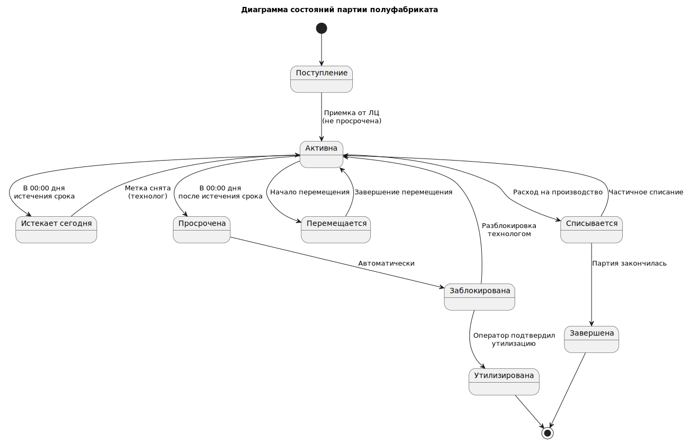

8. Варианты использования и порядок их реализации
8.1 Диаграмма вариантов использования
На снимке ниже представлены все варианты использования, которые будут реализованы в системе (нотация UML):

8.2 Диаграмма статусов
Партии полуфабрикатов имеют статусы, показанные на снимке: 
Реализацию вариантов использования необходимо разделить на два этапа - MVP и Первая поставка:
8.3 Описание Use Case, реализуемых в рамках MVP
8.3.1 UC1. Сформировать отчет по сроку годности
1. Краткое описание: Этот Use Case описывает процесс формирования пользователем (Оператором или Технологом) отчета, который отображает актуальные остатки полуфабрикатов с детализацией по партиям и их срокам годности. Отчет позволяет визуально идентифицировать партии, требующие внимания: с истекшим или близким к истечению сроком.
2. Акторы:
- Основной: Оператор роботизированной линии.
- Основной: Технолог.
3. Предусловия:
- Пользователь авторизован в системе.
- В системе проведена как минимум одна инвентаризация (UC4), обеспечивающая актуальность остатков.
- В системе внесены данные о сроках годности по партиям (через инвентаризацию).
4.Триггер:
- Пользователь выбирает опцию «Сформировать отчет по срокам годности».
5. Основной поток событий:
| Шаг | Действие Актора | Ответ Системы |
|---|---|---|
| 1 | Система отображает форму для настройки параметров отчета. | |
| 2 | Пользователь задает параметры отчета (опционально): - Зона хранения. - Группа товаров . - Статус срока годности. - Формат вывода. |
Система сохраняет предыдущие настройки пользователя по умолчанию. |
| 3 | Пользователь нажимает кнопку "Сформировать". | |
| 4 | Система выполняет запрос к базе данных, выбирая актуальные остатки по партиям, фильтруя и сортируя их согласно заданным параметрам. | |
| 5 | Система формирует и отображает отчет в виде таблицы. | |
| 6 | Пользователь анализирует отчет. Он ищет партии с статусом "Просрочен" или "Истекает сегодня". | |
| 7 | Пользователь принимает решение на основе отчета: - Сообщает Технологу. - Инициирует процесс утилизации (UC2-MVP). - Переносит партию на более видное место для скорейшего использования (FIFO/FEFO). |
6. Альтернативные потоки:
- А1: Автоматическое формирование отчета по расписанию.
- Технолог может настроить автоматическую генерацию отчета (например, каждое утро в 7:00) и отправку его на email. В этом случае система является инициатором Use Case.
- А2: Детализация партии.
- На шаге 5: Пользователь может кликнуть на строку с партией в отчете, чтобы просмотреть детальную информацию: дату поступления, первоначальное количество, историю движений.
- А3: Печать отчета для бумажного аудита.
- Пользователь выбирает формат вывода "PDF", распечатывает отчет и подшивает его в журнал утилизаций.
7. Постусловия:
- Сформирован отчет, отвечающий заданным параметрам.
- Пользователь проинформирован о состоянии запасов и сроках годности.
- На основе отчета могут быть инициированы действия: утилизация, перемещение, заказ, пополнение роботизированной линии.
8. Особые требования (NFR) для MVP:
- Производительность: Формирование отчета на экран не должно занимать более 5-7 секунд.
- Удобство использования: Это критичное требование для MVP. Отчет должен быть интуитивно понятным:
- Визуальная цветовая индикация: Строки с просроченными партиями подсвечиваются красным, истекающие сегодня — желтым, истекающие завтра — оранжевым, партии со статусом "Заблокирована" — серым. Остальные — белым/зеленым.
- Сортировка по умолчанию: Отчет автоматически сортируется по полю "Срок годности" (по возрастанию), чтобы самые проблемные партии были вверху.
- Важные колонки: В отчете обязательно должны быть колонки: Штрих-код, Наименование, Партия, Срок годности, Остаток, Локация, Статус.
- Доступность: Отчет должен быть доступен для просмотра на веб-интерфейсе.
- Консистентность: Данные в отчете должны строго соответствовать данным на момент его формирования. Последующие изменения остатков не должны менять уже сформированный отчет (если он не сформирован заново).
8.3.2 UC2-MVP. Утилизировать партию по отчету
1. Краткое описание: Этот Use Case описывает процесс, в котором Оператор линии вручную находит в системе партии, подлежащие утилизации (на основе отчета), физически изымает их и подтверждает факт утилизации в системе. Это упрощенная версия процесса без автоматических заданий для реализации на этапе MVP.
2. Акторы:
- Основной: Оператор линии.
3. Предусловия:
- Оператор авторизован в системе.
- В системе сформировать отчет "По сроку годности" (UC1).
- Оператор получил устное или письменное задание от Технолога на проведение утилизации.
4. Триггер:
- Оператор открывает отчет «По сроку годности».
5 Основной поток событий:
| Шаг | Действие Актора | Ответ Системы |
|---|---|---|
| 1 | Система отображает список партий с истекшим или истекающим сроком годности. | |
| 2 | Оператор просматривает отчет, определяет партию для утилизации и запоминает ее локацию и штрихкод. | |
| 3 | Оператор следует к указанной локации на складе, находит партию по штрих-коду. | |
| 4 | Оператор сканирует штрих-код партии с помощью мобильного устройства. | Система распознает партию, отображает ее данные и подтверждает, что она находится в отчете "к утилизации". |
| 5 | Оператор физически изымает партию и перемещает ее в зону утилизации. | |
| 6 | Оператор в мобильном приложении нажимает кнопку "Подтвердить утилизацию". | Система запрашивает подтверждение действия. |
| 7 | Оператор подтверждает свое намерение. | |
| 8 | Система выполняет следующие действия: 1. Списывает остаток данной партии до нуля. 2. Изменяет статус партии на "Утилизирована" (снимая блокировку, если она была). 3. Фиксирует акт списания в базе данных с указанием причины "Утилизация по сроку годности", даты и ответственного. 4. Обновляет остатки на складе в реальном времени. 5. Исключает партию из отчета "к утилизации". |
|
| 9 | Система отображает на терминале оператора сообщение об успехе. |
6. Альтернативные потоки:
- А1: Партия не найдена в отчете.
- На шаге 4: Если оператор сканирует партию, которой нет в отчете, система показывает предупреждение: "Данная партия не значится в отчете к утилизации". Процесс утилизации прерывается и начинается шаг 2.
- А2: Ручной ввод.
- На шаге 4: Если штрих-код поврежден, оператор может вручную найти партию в отчете и выбрать ее.
7. Постусловия:
- Партия физически утилизирована.
- Остатки партии в системе равны 0.
- В системе зафиксирован акт списания.
- Партия удалена из отчета "к утилизации".
8. Особые требования (NFR) для MVP:
- Актуальность: Отчет должен формироваться по требованию.
- Доступность: Оператор должен иметь быстрый доступ к отчету с web-приложения.
8.3.3 UC3-MVP. Пополнить оперативный запас у робота по отчету
1. Краткое описание: Этот Use Case описывает процесс, в котором Оператор роботизированной линии вручную проверяет в системе отчет об остатках на линии, самостоятельно принимает решение о необходимости пополнения, находит на складе подходящую партию (руководствуясь принципом FEFO) и фиксирует факт перемещения в системе.
2. Акторы:
- Основной: Оператор линии.
- Вторичный: Технолог (может дать устное указание на пополнение).
3. Предусловия:
- Оператор авторизован в системе.
- В системе существует"Сроки годности" (UC1).
4. Триггер:
- Оператор визуально видит, что запас одного полуфабрикатов на производственной линии заканчивается.
5. Основной поток событий:
| Шаг | Действие Актора | Ответ Системы |
|---|---|---|
| 1 | Оператор открывает "Сроки годности" (UC1) для полуфабриката, который заканчивается. | |
| 2 | Оператор визуально определяет, что остаток одного из полуфабрикатов низкий. | |
| 3 | Оператор открывает "Сроки годности" (UC1) для этого полуфабриката. | Система показывает список всех партий этого полуфабриката на складе, отсортированный по сроку годности (FEFO). |
| 4 | Оператор вручную выбирает партию для пополнения из верхней строки отчета (с самым близким сроком годности) и запоминает ее локацию и штрихкод. | |
| 5 | Оператор следует к указанной складской ячейке, находит партию по штрих-коду. | |
| 6 | Оператор сканирует штрих-код партии на складе. | Система распознает партию и отображает ее данные. |
| 7 | Оператор забирает необходимое количество (например, целую упаковку) и транспортирует его к линии. | |
| 8 | Оператор физически пополняет оперативный запас линии. | |
| 9 | Оператор в мобильном приложении выбирает функцию "Зафиксировать перемещение". | Система предлагает ввести количество (значение по умолчанию = 1). |
| 10 | Оператор при необходимости изменяет количество. | |
| 11 | Оператор нажимает "Подтвердить". | Система выполняет проводку: списывает количество со складской партии и добавляет его к выбранному оперативному запасу. |
| 12 | Система отображает сообщение об успешном перемещении. |
6. Альтернативные потоки:
- А1: Партия не найдена или недостаточно.
- На шаге 5-6: Если выбранной партии нет на месте или ее недостаточно, оператор выбирает следующую в отчете партию по FEFO.
- А2: Обнаружена просроченная партия.
- На шаге 6: При сканировании система может показать предупреждение, что срок годности партии истек. Оператор должен отказаться от ее использования и сообщить Технологу (инициируя процесс утилизации UC2-MVP).
7. Постусловия:
- Оперативный запас линии пополнен.
- Остатки на складе и на линии корректно обновлены в системе.
- В системе зафиксирован акт внутреннего перемещения.
8. Особые требования (NFR) для MVP:
- Процесс вместо автоматизации: Основная цель — не автоматизировать, а обеспечить пользователя всеми данными для принятия правильного решения и простым инструментом для фиксации результата.
- Эффективность: Процесс фиксации перемещения (шаги 9-12) должен быть максимально упрощен и занимать не более 15-20 секунд.
8.3.4 UC4. Провести инвентаризацию
1. Краткое описание: Этот Use Case описывает процесс сверки фактического наличия полуфабрикатов на складе и в оперативном запасе роботизированной линии с данными в системе. Оператор проводит подсчет, вносит данные через мобильное приложение, а система фиксирует расхождения, автоматически корректирует остатки и формирует отчет.
2. Акторы:
- Основной: Оператор линии.
- Второстепенный: Система управления запасами (инициирует, обрабатывает данные).
3. Предусловия:
- Оператор авторизован в системе.
- Мобильное устройство оператора имеет соединение с системой (или может работать в автономном режиме).
- Движение партий на складе и на линии сведено к минимуму (инвентаризация проводится в нерабочие часы или в специально отведенное время).
4. Триггер:
- Система инициирует процесс по расписанию (ежедневно/еженедельно).
5. Основной поток событий:
| Шаг | Действие Актора | Ответ Системы |
|---|---|---|
| 1 | Оператор получает задание "Провести инвентаризацию" на своем мобильном устройстве. Задание содержит: тип инвентаризации (сплошная/выборочная), перечень зон (склад, линия) или номенклатуры. | Триггер: Система инициирует процесс по расписанию (ежедневно/еженедельно). |
| 2 | Оператор выбирает зону для начала подсчета. | Система отображает схему зоны и список номенклатуры с ожидаемыми остатками. |
| 3 | Оператор последовательно сканирует штрих-код каждой партии в зоне и вносит фактическое количество/вес в приложение. Для зоны оперативного запаса оператор сканирует штрих-код контейнера и вносит фактический остаток. | Система в режиме реального времени проверяет штрих-код на валидность и отображает название полуфабриката для подтверждения. |
| 4 | Оператор завершает обход всех указанных зон и в приложении нажимает "Завершить инвентаризацию". | |
| 5 | Система автоматически выполняет сверку: сравнивает внесенные фактические данные с системными остатками по каждой позиции. | |
| 6 | Система рассчитывает расхождения (излишки/недостачи) по каждой партии. | |
| 7 | Если расхождение ≤ порога → система автоматически корректирует остатки. Если расхождение > порога → система блокирует позицию для разбирательства и уведомляет Технолога. Ключевой момент: Корректировка остатков оперативного запаса на линии не влияет на его виртуальный срок годности, так как меняется только количество, а не состав партий. Система не позволяет корректировать остатки по партиям со статусом 'Заблокирована'. | |
| 8 | Система формирует электронный акт инвентаризации (отчет), в котором фиксируются: дата, время, зона, ответственный, все позиции с расхождениями и причина (если указана). | |
| 9 | Система помечает задание как "Выполнено". Акт инвентаризации сохраняется в базе данных и становится доступным Технологу. |
6. Альтернативные потоки:
- А1: Обнаружена партия, не учтенная в системе.
- На шаге 3: Оператор может добавить новую позицию через "Добавить партию вручную", указав штрих-код, наименование и количество. Система зафиксирует это как излишек.
- А2: Партия не имеет штрих-кода или он поврежден.
- На шаге 3: Оператор может найти полуфабрикат в списке номенклатуры вручную и внести данные.
- А3: Инвентаризация прервана.
- На любом шаге: Оператор может приостановить задание. Система сохранит все внесенные данные. Позже оператор может возобновить инвентаризацию с момента останова.
- А4: Значительное расхождение.
- На шаге 7: Если расхождение > порога, система блокирует позицию и уведомляет Технолога. Технолог подтверждает коррекцию в системе.
7. Постусловия:
- Фактические остатки полуфабрикатов на складе и на линии соответствуют данным в системе.
- Сформирован и сохранен акт инвентаризации.
- Все расхождения зафиксированы и учтены.
- Данные для автозаказа и контроля сроков годности актуализированы.
8. Особые требования (NFR):
- Оффлайн-работа: Мобильное приложение должно обеспечивать полную оффлайн-функциональность. Все данные должны кэшироваться на устройстве, а после восстановления связи — автоматически синхронизироваться.
- Производительность: Внесение данных по одной партии (сканирование + ввод количества) должно занимать у оператора не более 3-5 секунд.
- Точность: Алгоритм сверки и корректировки остатков должен быть атомарным и гарантировать, что данные не будут потеряны даже при сбое.
- Удобство использования: Интерфейс должен быть оптимизирован для быстрого последовательного сканирования: после внесения одного значения фокус автоматически переходит на поле для сканирования следующего штрих-кода.
8.3.5 UC5. Вести справочники
1. Краткое описание: Этот Use Case описывает процесс создания, редактирования основных данных системы: справочника полуфабрикатов (номенклатуры) с установкой для каждого индивидуальных сроков хранения и справочника складских зон.
2. Акторы:
- Основной: Технолог.
- Второстепенный: Система управления запасами.
3. Предусловия:
- Пользователь (Технолог) авторизован в системе и имеет административные права на редактирование справочников.
- Пользователь работает с веб-интерфейсом.
4. Триггер
- Технологу необходимо занести данные в систему.
5. Основной поток событий:
| Шаг | Действие Актора | Ответ Системы |
|---|---|---|
| 1 | Технолог в основном меню системы выбирает раздел "Справочники" и подраздел "Номенклатура". | Система отображает список всех существующих полуфабрикатов с возможностью сортировки и поиска. |
| 2 | Технолог нажимает кнопку "Добавить" для создания новой позиции. | Система открывает форму создания новой номенклатурной позиции. |
| 3 | Технолог заполняет обязательные атрибуты: - Наименование - Единица измерения - выбирается из выпадающего списка. - Категория - выбирается из отдельного справочника. - Срок хранения (часов) – общий срок. - Срок хранения открытой упаковки (часов). |
Система проверяет уникальность наименования. |
| 4 | Технолог заполняет дополнительные атрибуты (опционально): штрих-код (для товара в целом), описание, фотография. | |
| 5 | Технолог нажимает кнопку "Сохранить". | Система проверяет данные. Если ошибок нет, создает новую запись в справочнике номенклатуры. Новая позиция становится сразу доступной для заказа, учета и инвентаризации. |
| 6 | Технолог переходит в подраздел "Типы зон" (отдельный справочник). | Система отображает список типов зон. |
| 7 | Технолог создает или редактирует типы зон. Сохраняет изменения | Система сохраняет типы зон. |
| 6 | Технолог переходит в подраздел "Складские зоны". | Система отображает иерархический список зон (например, Склад -> Холодильная камера -> Стеллаж 1 -> Полка 2). |
| 7 | Технолог создает или редактирует зоны, назначая им: - Уникальный ID/Наименование - Тип зоны – выбирается из справочника типов зон. - Штрих-код зоны (для сканирования оператором). |
Система сохраняет изменения. |
6. Альтернативные потоки:
- А1: Редактирование существующей позиции.
- На шаге 2: Технолог выбирает существующую позицию из списка и нажимает "Изменить". Важно: Изменение единицы измерения или срока хранения повлияет на все последующие операции. Система должна запросить подтверждение и показать предупреждение.
- А2: Деактивация/Архивация позиции.
- Технолог ставит галочку "Не активна" у позиции, которая более не используется. Система не позволяет удалить позицию, если по ней есть история операций (приход, движение, остатки). Такая позиция исключается из выпадающих списков для нового заказа, но остается в истории.
7. Постусловия:
- Справочники номенклатуры и зон актуализированы.
- Новые данные доступны для использования во всех процессах системы:
- Для инвентаризации (UC4) появилась новая позиция для учета.
- Для автозаказа (UC8) система может рассчитывать параметры для новой номенклатуры.
- Для контроля сроков годности (UC11) система использует новый установленный срок хранения для расчета даты истечения срока годности.
- Робот может получать данные о новой номенклатуре через API.
8. Особые требования (NFR):
- Целостность данных: Система должна гарантировать ссылочную целостность. Нельзя удалить позицию из справочника, если она используется в каких-либо документах (приход, движение, остатки).
- Валидация: Система должна строго проверять вводимые данные. Например, "Срок хранения" должен быть положительным числом, "Единица измерения" - только из предопределенного списка.
- Производительность: Загрузка и отображение справочников должны быть быстрыми даже при большом объеме данных (тысячи позиций). Необходимо реализовать пагинацию и поиск.
- Безопасность: Доступ к редактированию справочников должен быть строго ограничен кругом ответственных лиц (ролевая модель).
8.3.6 UC6. Скорректировать заказ
1. Краткое описание: Этот Use Case описывает процесс ручного просмотра, проверки и корректировки заказа на полуфабрикаты, автоматически сформированного системой, перед его окончательной отправкой в Логистический Центр (ЛЦ). Технолог может учесть дополнительные факторы, которые не заложены в алгоритме.
2. Акторы:
- Основной: Технолог.
- Второстепенный: Система управления запасами (формирует черновик заказа).
3. Предусловия:
- Пользователь авторизован в системе и имеет права на подтверждение/корректировку заказов.
- Система автоматически выполнила UC8: "Рассчитать автозаказ" и сформировала черновик заказа (проект заказа).
- Заказ находится в статусе "Черновик" или "На согласовании".
4. Триггер:
Технолог получает уведомление о сформированном черновике.
5. Основной поток событий:
| Шаг | Действие Актора | Ответ Системы |
|---|---|---|
| 1 | Технолог получает уведомление о сформированном черновике заказа ИЛИ открывает раздел "Заказы" и выбирает заказ со статусом "Черновик". | Система отображает интерфейс просмотра заказа. |
| 2 | Технолог просматривает предложенные системой позиции, количества и общую сумму заказа. | Система предоставляет детализацию: по каждой позиции можно посмотреть обоснование (например: "Остаток: 5 кг, Точка заказа: 10 кг, Рекомендуется заказать: 20 кг (Max=25 кг)"). |
| 3 | Технолог анализирует заказ. Решает, что корректировка не требуется. | |
| 4 | Технолог нажимает кнопку "Утвердить и отправить". | Система запрашивает подтверждение ("Вы уверены, что хотите отправить заказ в ЛЦ?"). |
| 5 | Технолог подтверждает действие. | |
| 6 | Система меняет статус заказа на "Отправлен в ЛЦ" и автоматически выполняет UC12: "Передать заказ в ЛЦ" через API. |
6. Альтернативные потоки:
- А1: Корректировка количества или состава заказа.
- На шаге 3: Технолог видит необходимость изменить заказ.
- Технолог редактирует количество вручную для определенных позиций (например, увеличивает количество из-за планируемой акции или уменьшает, зная о предстоящем простое).
- Технолог добавляет новую позицию в заказ, которой нет в автозаказе (например, новый товар для теста).
- Технолог удаляет позицию из заказа (например, зная, что на основном складе ЛЦ ее нет в наличии).
-
После внесения изменений Технолог нажимает "Сохранить черновик" или сразу "Утвердить и отправить". Система сохраняет изменения и следует основному потоку.
-
А2: Отклонение заказа.
- На шаге 3: Технолог понимает, что заказ формировать не нужно (например, ресторан закрывается на санитарный день).
- Технолог нажимает кнопку "Отклонить" и указывает причину.
-
Система меняет статус заказа на "Отклонен" и архивирует его. Уведомление не отправляется.
-
А3: Запрос дополнительной информации.
- На шаге 3: Технолог может просмотреть отчет о продажах по конкретной позиции или график остатков за прошедшую неделю, чтобы принять более обоснованное решение. Система предоставляет эту аналитику в виде вкладок или всплывающих окон.
7. Постусловия:
- Заказ либо отправлен в ЛЦ в исходном или отредактированном виде, либо отклонен.
- Все действия Технолога (просмотр, корректировка, утверждение, отклонение) залогированы в системе для аудита.
- Если заказ отправлен, система ожидает его подтверждения и выполнения от ЛЦ.
8. Особые требования (NFR):
- Аудит: Система должна вести базовое логирование изменений по каждому заказу. Это критично для анализа эффективности правил автозаказа.
- Валидация: При ручном изменении количества система должна проводить проверку: количество > 0 и числовое значение.
- Производительность: Интерфейс просмотра и редактирования заказа должен загружаться быстро, даже если заказ содержит сотни позиций (необходимо использование пагинации, динамического списка).
- Уведомления: Система должна иметь механизм оповещения Технолога в интерфейсе системы о появлении нового черновика заказа (фиксированное время до крайнего срока).
- Визуализация: Для удобства Технолога позиции в заказе можно подсвечивать цветом: зеленый – рекомендовано системой, оранжевый – изменено Технологом.
8.3.7 UC7. Заблокировать просроченную партию
1. Краткое описание: Этот Use Case описывает процесс автоматического перевода партии полуфабриката в статус "Заблокирована" при обнаружении системой истечения или скорого истечения срока ее годности. Блокировка предотвращает использование партии в любых операциях: пополнении линии, производстве. Это ключевая контрольная точка системы безопасности пищевых продуктов.
2. Акторы:
- Основной: Система управления запасами.
- Вторичный: Оператор линии (получает уведомление/задание).
3. Предусловия:
- В системе существуют партии полуфабрикатов с актуальными данными о сроках годности.
- Для партии настроен атрибут "Статус" с возможностью значения "Заблокирована".
4. Триггер
- Наступило время запуска фонового задания (фиксированное время).
- Получен запрос от робота на проверку срока (UC11).
5. Основной поток событий:
| Шаг | Действие Актора | Ответ Системы |
|---|---|---|
| 1 | Система запускает фоновую проверку сроков годности | Система итерируется по всем активным партиям. |
| 2 | Система вычисляет для каждой партии время до истечения срока годности. | |
| 3 | Система сравнивает это время с заданными критическими порогами. | |
| 4 | Система находит партию, которая соответствует критериям блокировки: - Критерий 1: Текущая дата >= Срок годности партии (Просрочка).- Критерий 2: Текущая дата + X часов >= Срок годности партии (Скоро закончится срок годности). |
|
| 5 | Система автоматически меняет статус партии на "Заблокирована". | |
| 6 | Система вносит запись в журнал аудита (кто (система), когда, какую партию и по какой причине заблокировал). | |
| 7 | Система распространяет информацию о блокировке по всем подсистемам: - Исключает партию из алгоритмов пополнения (UC2) и автозаказа (UC8). - Сообщает роботу (если партия в оперативном запасе), что ее использование запрещено. |
|
| 8 | Система обновляет информацию в отчете UC1 |
6. Альтернативные потоки:
- А1: Ручная блокировка Технологом.
- Оператор может вручную заблокировать партию через интерфейс (например, при обнаружении визуального брака). Система выполняет те же шаги (5-9), но в журнале аудита указывает инициатора-оператора.
- А2: Партия уже заблокирована.
- Если партия уже имеет статус "Заблокирована", система пропускает ее.
- А3: Ошибка при блокировке.
- Если партия находится в процессе списания или перемещения, система временно не может изменить ее статус. Процесс блокировки повторяется через короткий интервал времени.
6. Постусловия:
- Партия переведена в статус "Заблокирована".
- Информация о блокировке актуальна во всех модулях системы.
- Для партии создано задание на утилизацию (UC13).
- Использование партии в производстве невозможно до разблокировки (которая может произойти только после проверки или ошибочного действия, что должно быть задокументировано).
- Заблокированные партии исключаются из расчета автозаказа (UC8)
7. Особые требования (NFR):
- Производительность: Процесс проверки и блокировки должен быть быстрым. Проверка тысяч партий должна выполняться за десятки секунд.
- Надежность и атомарность: Изменение статуса и распространение этого изменения по системе должно быть транзакционным. Не допускается ситуация, когда статус изменен, но робот еще может использовать партию.
- Аудит: Журналирование всех действий по блокировке/разблокировке является обязательным. Каждая запись должна быть неизменяемой (immutable log).
- Настраиваемость: Параметр
X(часы до истечения срока для блокировки) должен быть гибко настраиваемым для разных категорий полуфабрикатов через интерфейс UC5. - Безопасность: Процесс обратной разблокировки (снятия статуса) должен быть максимально затруднен и требовать обязательного участия Технолога с указанием веской причины в журнале аудита (журнал регистрации).
8.3.8 UC8. Рассчитать автозаказ
1. Краткое описание: Этот Use Case описывает процесс автоматического расчета количества полуфабрикатов для заказа в Логистический Центр (ЛЦ). Система на основе текущих остатков, предварительно настроенных правил, прогноза продаж и данных о поставках определяет, что, в каком количестве и когда нужно заказать для поддержания бесперебойной работы ресторана.
2. Акторы:
- Основной: Система управления запасами.
- Вторичный: Технолог (может получать уведомления о результате расчета).
3. Предусловия:
- В системе существуют и активированы Правила автозаказа (UC10) для номенклатурных позиций.
- В системе есть актуальные данные об остатках на складе и в оперативном запасе.
- В системе есть справочные данные о номенклатуре (UC5) и поставщиках (ЛЦ).
4. Триггер:
- Наступило время запуска по расписанию
5. Основной поток событий:
| Шаг | Действие Актора | Ответ Системы |
|---|---|---|
| 1 | Система по расписанию запускает процедуру расчета автозаказа. | Система определяет список номенклатурных позиций, для которых настроены правила автозаказа. |
| 2 | Для каждой позиции система собирает входные данные: - Текущий остаток (на складе + на линии). - Параметры правила из UC10 (Min, Max, Reorder Point, кратность и т.д.). - Прогноз продаж на период поставки (если функция активирована). - Срок поставки от ЛЦ (в днях). - Незавершенные заказы (уже отправленные, но еще не полученные). |
|
| 3 | Система применяет алгоритм расчета для каждой позиции. Формула:Рекомендуемый заказ = Максимальный запас (Max) - Текущий остаток - Незавершенные заказы + Прогноз продаж на срок поставки (Прогноз продаж из модуля продаж через API) |
|
| 4 | Система накладывает ограничения правила: - Если Рекомендуемый заказ < Минимальной партии -> Заказ = 0 (заказывать невыгодно/невозможно).- Если Рекомендуемый заказ > 0 -> привести к кратности (округлить в большую сторону до значения, кратного параметру "Кратность").- Если Текущий остаток > Точки заказа (Reorder Point) -> Заказ = 0 (не время заказывать). |
|
| 5 | Система формирует черновик заказа (проект заказа), включающий все позиции с Заказ > 0. |
|
| 6 | Система проводит финальную проверку черновика (валидация данных, отсутствие дубликатов). | |
| 7 | Система сохраняет черновик заказа в базе данных со статусом "Рассчитан". | |
| 8 | Система уведомляет Технолога в интерфейсе о готовности черновика заказа для проверки и корректировки (см. UC6). |
6. Альтернативные потоки:
- А1: Срабатывание по триггеру (вне расписания).
- Use Case может быть запущен принудительно Технологом или по событию (например, после проведения крупной инвентаризации (UC4), выявившей значительные расхождения).
- А2: Рассчитать для одной позиции.
- Если остаток по конкретной позиции резко упал ниже Минимального запаса (Min), система может немедленно рассчитать и включить ее в заказ вне общего расписания.
- А3: Отсутствие правила.
- Если для позиции нет активного правила, система пропускает ее и не включает в расчет.
- А4: Ошибка расчета.
- Если данные для расчета некорректны (например, отрицательный остаток), система помечает позицию в черновике особым статусом "Ошибка" и уведомляет Технолога.
8. Постусловия:
- Сформирован черновик заказа со статусом "Рассчитан".
- Черновик доступен Технологу для просмотра и корректировки (UC6).
- Рассчитанные количества являются рекомендацией системы и могут быть изменены.
9. Особые требования (NFR):
- Производительность: Алгоритм расчета должен быть быстрым. Расчет заказа для нескольких сотен позиций должен выполняться не более чем за 1-2 минуты.
- Детерминированность: Расчет должен быть полностью предсказуемым и воспроизводимым. При одинаковых входных данных результат должен быть идентичным.
- Аудит: Система должна сохранять базовую информацию входных данных, использованных для расчета. Это необходимо для последующего анализа и отладки алгоритма.
- Масштабируемость: Алгоритм должен работать стабильно при росте объема данных (номенклатуры, истории продаж).
- Обоснованность: Система должна для каждой позиции в черновике заказа предоставлять детальное обоснование расчета.
8.4 Описание Use Case реализуемых в рамках первого релиза
8.4.1 UC2. Утилизировать партию
1. Краткое описание: Этот Use Case описывает процесс, в котором Оператор роботизированной линии физически изымает и утилизирует партию полуфабрикатов с истекшим или истекающим сроком годности на основании задания, сформированного системой. Система фиксирует факт утилизации и списывает партию с учета.
2. Акторы:
- Основной: Оператор линии.
- Второстепенный: Система управления запасами (инициирует процесс, формируя задание).
3. Предусловия:
- Система идентифицировала партию, подлежащую утилизации (срок годности истек или истекает в течение X часов).
- Система изменила статус партии на "Заблокирована".
- Система сформировала и отправила задание на утилизацию на терминал Оператора.
- Оператор авторизован в системе.
- Мобильное устройство Оператора имеет соединение с системой.
4. Триггер:
- Оператор получает задание "Утилизировать партию" на своем терминале. Задание содержит: наименование полуфабриката, штрих-код партии, локацию (складская ячейка или зона оперативного запаса), причину утилизации (например, "Срок годности истекает через 2 часа").
5. Основной поток событий:
| Шаг | Действие Актора | Ответ Системы |
|---|---|---|
| 1 | Система отображает групповое задание в очереди с самым высоким приоритетом. | |
| 2 | Оператор следует к указанной локации, находит партию по штрих-коду. | |
| 3 | Оператор сканирует штрих-код партии с помощью мобильного устройства. | Система подтверждает, что штрих-код соответствует заданию, партия имеет статус "Заблокирована", и отображает детали партии (срок годности, количество). |
| 4 | Оператор физически изымает партию и перемещает ее в зону утилизации. | |
| 5 | Оператор в мобильном приложении нажимает кнопку "Подтвердить утилизацию". | |
| 6 | Система запрашивает подтверждение действия (например, всплывающее окно "Вы уверены?"). | |
| 7 | Оператор подтверждает свое намерение. | |
| 8 | Система выполняет следующие действия: 1. Списывает остаток данной партии до нуля. 2. Меняет статус партии с "Заблокирована" на "Утилизирована". 3. Фиксирует акт списания в базе данных с указанием причины, даты, времени и ответственного оператора. 4. Обновляет остатки на складе/линии в реальном времени. 5. Обязательно уведомляет Технолога (интерфейс/Push/email). |
|
| 9 | Система отображает на терминале оператора сообщение об успешном завершении задания: "Партия [Штрих-код] утилизирована". |
6. Альтернативные потоки:
- А1: Штрих-код не сканируется.
- На шаге 3: Если штрих-код поврежден и не сканируется, Оператор может вручную ввести ID партии в приложении.
- А2: Оператор обнаружил несоответствие.
- На шаге 2-3: Если фактическое количество или состояние партии не соответствует данным в системе (например, партия уже частично использована), Оператор может ввести фактическое количество к утилизации перед подтверждением.
- А3: Оператор отменяет действие.
- На шаге 6: Оператор может отменить действие. Задание остается в его очереди с статусом "В работе".
7. Постусловия:
- Партия физически утилизирована.
- Остатки партии в системе равны 0, статус изменен на "Утилизирована".
- В системе зафиксирован акт списания с указанием причины "Утилизация по сроку годности".
- Задание помечено как "Выполнено".
- Если утилизирована партия из оперативного запаса, система автоматически инициирует UC3: "Пополнить оперативный запас".
8. Особые требования (NFR):
- Производительность: Подтверждение утилизации и обновление остатков в системе должно происходить менее чем за 3 секунды.
- Удобство использования: Интерфейс мобильного приложения для утилизации должен быть простым и требовать не более 3-х касаний для завершения задания.
- Надежность: Данные об акте списания должны быть сохранены гарантированно, даже при разрыве соединения (с последующей синхронизацией).
- Безопасность: Подтвердить утилизацию может только авторизованный оператор. Для подтверждения достаточно логина/пароля (биометрическая аутентификация - опционально).
8.4.2 UC3. Пополнить оперативный запас
1. Краткое описание: Этот Use Case описывает процесс пополнения расходуемого роботом оперативного запаса полуфабрикатов. Оператор по заданию системы находит на основном складе партию, отобранную по принципу FEFO, перемещает её к роботу и пополняет запас. Система фиксирует перемещение, обновляет остатки и пересчитывает "виртуальный" срок годности оперативного запаса.
2. Акторы:
- Основной: Оператор линии.
- Второстепенный: Система управления запасами (инициирует процесс, отслеживает остатки).
- Внешний источник данных: Роботизированная линия (расходует запас, что является триггером для системы).
3. Предусловия:
- Система в реальном времени отслеживает остаток каждого полуфабриката в оперативном запасе робота (на основе получения сообщений о списании от робота).
- Остаток конкретного полуфабриката достиг точки пополнения. Эта точка > 0 и рассчитывается так, чтобы запаса хватило на время выполнения задания пополнения.
- На основном складе есть доступные партии данного полуфабриката.
- Оператор авторизован в системе и свободен.
- Система рассчитывает точку пополнения на основе прогноза продаж.
4. Триггер
- Оператор получает задание "Пополнить оперативный запас [Наименование]" на своем мобильном устройстве. Задание имеет высокий приоритет. Задание содержит: наименование, штрих-код исходной партии, локацию на складе, количество для перемещения (равное ёмкости контейнера на линии).
- Система отследила, что остаток на линии упал ниже точки пополнения. Она автоматически сформировала задание, выбрав партию по FEFO
5. Основной поток событий:
| Шаг | Действие Актора | Ответ Системы |
|---|---|---|
| 1 | Оператор немедленно следует к указанной складской ячейке, находит партию по штрих-коду. | Система подсвечивает ячейку на схеме склада в приложении оператора. |
| 2 | Оператор сканирует штрих-код партии на складе. | Система подтверждает корректность выбора. Важно: Система проверяет: не заблокирована ли партия, соответствует ли полуфабрикат, достаточно ли количества(например, другим процессом утилизации). |
| 3 | Оператор забирает целую упаковку (или рассчитанное количество) и транспортирует ее к роботу. | |
| 4 | Оператор вскрывает упаковку и перекладывает полуфабрикаты в контейнер оперативного запаса на линии. | |
| 5 | Оператор сканирует штрих-код конкретного контейнера оперативного запаса на линии, который собирается пополнить. | Система понимает, куда именно было добавлено сырье. |
| 6 | Оператор в приложении нажимает "Подтвердить пополнение". | Система всегда запрашивает подтверждение количества. |
| 7 | Система выполняет атомарные действия: 1. Списывает перемещенное количество с исходной складской партии. 2. Добавляет это количество к остатку оперативного запаса в указанном контейнере. 3. Пересчитывает "виртуальный срок годности" всего содержимого контейнера. Формула: Если в контейнере уже был остаток (Y1 с сроком T1), и добавили новую партию (Y2 с сроком T2), новый срок рассчитывается как средневзвешенное: (Y1*T1 + Y2*T2) / (Y1 + Y2). Это критически важно для последующего контроля роботом.4. Фиксирует акт перемещения. |
|
| 8 | Система отправляет подтверждение роботу через API, что запас пополнен и обновляет данные о сроке годности для этого контейнера. | |
| 9 | Система уведомляет оператора: "Контейнер [X] пополнен. Новый срок годности: [дата]". |
6. Альтернативные потоки:
- А1: Робот израсходовал запас до нуля до завершения пополнения.
- На любом шаге: Робот может отправить системе аварийное сообщение "Остановка: нет ингредиента X". Система переводит приоритет в 'КРИТИЧЕСКИЙ' при времени до полного исчерпания ≤10 минут, уведомляет Технолога. Оператор должен завершить пополнение в максимально сжатые сроки.
-
Система уведомляет Технолога через Push/SMS.
-
А2: Вскрытая на линии упаковка оказалась бракованной.
- На шаге 4: Оператор отмечает в приложении "Брак". Система предписывает утилизировать эту партию (инициирует UC2) и немедленно сформирует новое задание на пополнение из другой партии.
7. Постусловия:
- Оперативный запас робота пополнен до нормального уровня.
- Данные об остатках на складе и на линии корректно обновлены.
- Рассчитан новый актуальный срок годности для содержимого контейнера оперативного запаса.
- Робот имеет корректные данные о наличии и сроке годности ингредиента и может продолжать работу.
- Задание помечено как "Выполнено".
8. Особые требования (NFR):
- Производительность (критично): Время от момента срабатывания триггера (низкий остаток) до появления задания у оператора — < 10 секунд.
- Real-Time: Система должна отслеживать остатки на линии в режиме, близком к реальному времени (получая сообщения от робота о каждом списании).
- Надежность алгоритма: Алгоритм пересчета виртуального срока годности должен быть точным и консервативным. В случае добавления партии с более ранним сроком, чем текущий "виртуальный", система должна принять более ранний срок.
8.4.3 UC9. Подтвердить списание
1. Краткое описание: Этот Use Case описывает процесс документального подтверждения и фиксации факта списания полуфабрикатов не в результате продажи или производства. Основные причины: утилизация просрочки, брак, бой, порча, хищение. Оператор подтверждает списание через мобильное приложение, а система фиксирует акт, списывает остатки и обновляет учетные данные.
2. Акторы:
- Основной: Оператор линии или Технолог.
- Второстепенный: Система управления запасами (инициирует процесс для утилизации или предоставляет интерфейс).
3. Предусловия:
- Оператор авторизован в системе и имеет права на подтверждение списания.
- Обнаружены полуфабрикаты, подлежащие списанию (физически изъяты из оборота).
- Для списания по причине "Утилизация" партия должна быть предварительно заблокирована системой.
- Для списания в оффлайн-режиме партия не должна быть заблокирована
4. Триггер
- Оператор физически изымает партию из оборота.
- Оператор получает задание на утилизацию от системы (см. UC2).
5. Основной поток событий:
| Шаг | Действие Актора | Ответ Системы |
|---|---|---|
| 1 | Оператор в мобильном приложении выбирает функцию "Зафиксировать списание". | Система предлагает выбрать причину списания из фиксированного системного перечня. |
| 2 | Оператор выбирает причину списания. | |
| 3 | Оператор сканирует штрих-код партии, подлежащей списанию. | Система распознает партию, отображает ее данные: наименование, текущий остаток, срок годности. Важно: Если причина "Просрочка", система проверяет, "Если причина 'Просрочка', система проверяет статус 'Заблокирована' и предотвращает списание в оффлайн-режиме". |
| 4 | Оператор вводит фактическое количество к списанию (по умолчанию предлагается весь остаток). | |
| 5 | Оператор при необходимости добавляет комментарий (например, "упаковка вскрыта", "посторонний предмет"). | |
| 6 | Оператор нажимает кнопку "Подтвердить списание". | Система запрашивает финальное подтверждение действия, указывая сумму списания. |
| 7 | Оператор подтверждает действие. | |
| 8 | Система выполняет атомарные действия: 1. Списывает указанное количество с остатка партии. 2. Меняет статус партии (если списан весь остаток, статус меняется на "Утилизирована"). 3. Фиксирует акт списания в базе данных с обязательными реквизитами: дата, время, партия, причина, количество, ответственный, комментарий, фото. 4. Обновляет отчетные данные и остатки в реальном времени. |
|
| 9 | Если списание превышает лимит, система требует последующего подтверждения Технолога. | |
| 10 | Система отображает сообщение об успехе: "Списание подтверждено". |
6. Альтернативные потоки:
- А1: Списание по акту от Технолога.
- На шаге 1: Технолог может создать задание на списание из своей учетной записи. Оператор получает задание, в котором уже указаны номенклатура, причина и количество. Оператору остается только отсканировать партию для подтверждения и выполнить шаги 4-12.
- А2: Списание без штрих-кода (например, рассыпанные овощи).
- На шаге 4: Оператор может вручную выбрать номенклатуру из справочника и указать количество к списанию.
- А3: Попытка списать не заблокированную партию с нормальным сроком.
- На шаге 4: Если причина "Просрочка", но срок годности не истек и статус не "Заблокирована", система отклоняет запрос и требует дополнительного подтверждения от Технолога (ввод кода или push-уведомление Технологу). Это защита от ошибок и злоупотреблений. Система уведомляет Технолога через Push/email/SMS.
7. Постусловия:
- Полуфабрикаты физически списаны (утилизированы).
- Остатки партии в системе уменьшены на указанное количество.
- В системе зафиксирован не редактируемый акт списания с полным аудитом (кто, что, когда, почему).
- Данные для финансового и управленческого учета обновлены.
- Если списание было инициировано заданием (UC13), задание помечается как "Выполнено".
8. Особые требования (NFR):
- Аудит и безопасность: Все акты списания должны храниться в неизменяемом виде. Должна быть реализована ролевая модель, запрещающая обычным операторам списывать товары без ограничений (только по заблокированным системой партиям или по утвержденным Технологом актам).Списание в оффлайн-режиме запрещено для заблокированных партий/
- Производительность: Процесс подтверждения списания (от сканирования до фиксации) должен занимать не более 10 секунд.
- Доступность: Полная оффлайн-функциональность с синхронизацией при появлении сети.
- Синхронизация: При синхронизации действия Технолога имеют приоритет.
8.4.4 UC10. Настроить правила автозаказа
1. Идентификатор и Название:
1. Краткое описание: Этот Use Case описывает процесс определения и конфигурации бизнес-правил, по которым система будет автоматически формировать заявки на пополнение запасов полуфабрикатов с логистического центра (ЛЦ). Технолог устанавливает для каждой позиции параметры, минимизирующие риск дефицита и излишков.
2. Акторы:
- Основной: Технолог.
- Второстепенный: Система управления запасами.
3. Предусловия:
- Пользователь авторизован в системе и имеет права на изменение правил.
- В системе существует номенклатура полуфабрикатов (UC5), для которых настраиваются правила.
- Известны ключевые параметры поставок от ЛЦ: минимальная партия заказа, кратность паллеты/упаковки, дни и время поставок.
4. Триггер
- Необходимо внести настройки для автоматической работы системы.
5. Основной поток событий:
| Шаг | Действие Актора | Ответ Системы |
|---|---|---|
| 1 | Технолог в меню системы выбирает раздел "Закупки" -> "Правила автозаказа". | Система отображает таблицу со списком всех полуфабрикатов и текущими значениями правил для каждого. |
| 2 | Технолог выбирает позицию из списка или использует поиск. | Система отображает детальную карточку настройки правил для выбранной позиции. |
| 3 | Технолог настраивает параметры правила. Минимальный запас (Min Stock): Стоп-уровень, при достижении которого система НЕМЕДЛЕННО создаст заказ. Максимальный запас (Max Stock): Целевой уровень, ДО которого система будет пытаться пополнить запасы. Точка заказа (Reorder Point): Уровень, при достижении которого система инициирует плановый заказ в рамках регулярного цикла. |
Система отображает визуальную подсказку в виде графика. |
| 4 | Технолог настраивает параметры, связанные с поставщиком (ЛЦ): - Минимальная партия заказа (например, 10 кг). - Кратность (например, можно заказывать только кратно 5 кг – 5, 10, 15...). - Срок поставки (в днях) – время от момента заказа до получения. |
|
| 5 | Технолог настраивает коэффициенты потребления: - Сезонность (помесячные коэффициенты с выбором шаблона). - Прогноз на основе продаж (вкл/выкл) - обязательная функция с жестко прописанными формулами. |
|
| 6 | Технолог нажимает кнопку "Сохранить правило". | Система проводит валидацию правил: проверяет, что Min < Reorder Point < Max, минимальная партия ≤ Max запас. |
| 7 | Система сохраняет правило и применяет его ко всем последующим запускам алгоритма автозаказа (UC8). |
6. Альтернативные потоки:
- А1: Массовая настройка правил для группы товаров.
- Технолог применяет фильтр к списку номенклатуры (например, все товары в категории "Овощи") и нажимает "Настроить для группы". Система система позволяет установить относительные изменения ко всем параметрам. Система проводит валидацию для каждой позиции.
- А2: Настройка правила по шаблону.
- Технолог создает шаблон как копию действующего правила и может применить его к позиции, лишь скорректировав значения.
- А3: Валидация не пройдена.
- На шаге 6: Если система обнаружила ошибку (например, Min > Max), она подсвечивает невалидные поля и не позволяет сохранить правило до исправления.
7. Постусловия:
- Для номенклатурной позиции создано или обновлено правило автозаказа.
- Правило активно и будет использоваться алгоритмом UC8: "Рассчитать автозаказ" при следующем запуске.
- Система будет автоматически формировать заказы в ЛЦ, руководствуясь этим правилом и текущими остатками.
8. Особые требования (NFR):
- Валидация (критично): Система должна предотвращать сохранение некорректных правил, которые могут привести к переполнению склада или дефициту (например, точка заказа ниже минимального запаса).
- Визуализация: Интерфейс настройки должен интуитивно показывать, как будут работать правила. Идеально – использовать график уровня запасов с линиями Min, Reorder Point и Max.
- Аудит: Система ведет логирование изменений правил (кто, когда и какие значения изменил). Это критично для анализа работы системы.
- Производительность: Алгоритм применения групповых изменений должен работать эффективно, не вызывая задержек в интерфейсе.
- Обучение: Система может предоставлять подсказки и рекомендуемые значения на основе анализа истории потребления (например, "На основе данных за последний месяц, рекомендуемая точка заказа для этого товара – 50 кг").
8.4.5 UC11. Проверить срок годности
1. Краткое описание: Этот Use Case описывает процесс проверки системой срока годности конкретной партии полуфабриката по запросу роботизированной линии перед его использованием в приготовлении блюда. Система возвращает роботу вердикт: разрешить или запретить использование. Это последний барьер для предотвращения использования просроченного сырья.
2. Акторы:
- Основной: Роботизированная линия (Инициатор запроса).
- Основной: Система управления запасами (Обработчик запроса).
3. Предусловия:
- Роботизированная линия интегрирована с системой управления запасами через API.
- Полуфабрикат в оперативном запасе линии имеет актуальный "виртуальный срок годности", рассчитанный системой.
- Система и линия имеют устойчивое соединение.
4. Триггер
- Роботу на производственной линии нужно взять порцию полуфабриката.
5. Основной поток событий:
| Шаг | Действие Актора | Ответ Системы |
|---|---|---|
| 1 | Робот формирует и отправляет системе запрос через API. Запрос содержит: - ID линии/контейнера. - ID полуфабриката. - Количество для списания. |
Система принимает запрос. |
| 2 | Система идентифицирует "виртуальную партию" оперативного запаса для указанного контейнера и полуфабриката. | |
| 3 | Система проверяет статус партии. | |
| 4 | Система проверяет срок годности партии. | |
| 5 | Система сравнивает текущее время с рассчитанным сроком годности. | |
| 6 | Система принимает решение на основе проверки. | |
| 7 | Система формирует и отправляет ответ роботу. | |
| 8 | Робот получает ответ от системы. | |
| 9 | Робот выполняет действие на основе ответа. |
6. Альтернативные потоки:
- А1: Партия заблокирована.
- На шаге 4: Если статус партии = "Заблокирована", система немедленно возвращает ответ. Робот останавливает работу и уведомляет оператора.
- А2: Срок годности истек.
- На шаге 7: Если текущая дата и время превышают расчетный срок годности, система возвращает ответ. Робот останавливает работу.
- А3: Срок годности истекает в течение периода готовки.
- На шаге 7: Система может быть настроена на проверку "с запасом". Если срок годности истекает раньше, чем истечет срок реализации готового блюда (период готовки настраивается технологом для блюда в целом), система может вернуть ответ-предупреждение. Робот может либо продолжить работу, либо также остановиться для решения оператора.
- А4: Система недоступна. Робот использует кэшированные данные за последний час
7. Постусловия:
- В случае Успеха: Робот использует полуфабрикат, отправляет системе подтверждение о списании, и система уменьшает остаток оперативного запаса.
- В случае Неудачи (Блокировка/Просрочка): Использование полуфабриката предотвращено. Работа линии приостановлена. Инициируются процессы UC9 и UC8 (если не были запущены ранее) и уведомляется оператор (UC2).
8. Особые требования (NFR):
- Производительность (Критично): Время от момента отправки запроса роботом до получения ответа должно быть минимальным (< 100 мс). Любая задержка напрямую влияет на скорость работы линии.
- Доступность (Критично): Сервис проверки должен иметь доступность 99.99%. Его простои недопустимы, так как останавливают всю линию.
- Масштабируемость: Сервис должен выдерживать пиковые нагрузки, обрабатывая сотни запросов в минуту от множества линий одновременно. Сервис должен выдерживать нагрузку на 50-75% выше текущей.
- Безопасность: API-endpoint должен быть защищен от несанкционированного доступа (аутентификация и авторизация запросов от робота).
- Журналирование: Система логирует только запросы с ошибками. При остановке робота система отправляет SMS технологу и оператору.
8.4.6 UC12. Передать заказ в ЛЦ
1. Краткое описание: Этот Use Case описывает процесс автоматической отправки утвержденного заказа на полуфабрикаты из системы управления запасами ресторана в систему Логистического Центра (ЛЦ). Цель — обеспечить безошибочную и своевременную передачу данных без ручного вмешательства.
2. Акторы:
- Основной: Система управления запасами (Инициатор отправки).
- Основной: Логистический центр (Получатель заказа).
3. Предусловия:
- Заказ находится в статусе "Утвержден" (после успешного выполнения UC7: "Скорректировать заказ" или автоматического утверждения).
- Настроена и активна интеграция с системой ЛЦ (API, FTP-обмен и т.д.).
- Известны и валидны учетные данные для доступа к API ЛЦ.
- Заказ содержит как минимум одну позицию с количеством > 0.
4. Триггер
- Есть заказ, готовый к отправке
5. Основной поток событий:
| Шаг | Действие Актора | Ответ Системы |
|---|---|---|
| 1 | Система помечает заказ как "В процессе отправки". | |
| 2 | Система формирует исходящее сообщение в формате, автоматически определяемом для конкретного ЛЦ. Сообщение содержит: - ID заказа из внутренней системы. - ID ресторана-отправителя. - Желаемую дату и время поставки. - Список позиций (артикул товара в системе ЛЦ, количество, единица измерения). |
|
| 3 | Система выполняет вызов API ЛЦ (HTTP POST запрос) и передает сформированное сообщение. | |
| 4 | Система получает ответ от API ЛЦ. | |
| 5 | Система анализирует ответ. | |
| 6 | Система обрабатывает успешный ответ. Если ЛЦ изменил количество, система автоматически корректирует заказ. | |
| 7 | Система фиксирует факт успешной отправки. |
5. Альтернативные потоки:
- А1: Ошибка интеграции (API недоступно).
- На шаге 4: Если система не получает ответа от API ЛЦ (таймаут, ошибка сети), она выполняет повторные попытки отправки через 1 минуту. После исчерпания попыток заказ переводится в статус "Ошибка отправки", и Технолог получает уведомление через все каналы, SMS - только при критических ошибках.
- А2: Ошибка данных на стороне ЛЦ.
- На шаге 5: Если ЛЦ возвращает ошибку валидации (например, "Неизвестный артикул товара", "Неверное количество"), система переводит заказ в статус "Ошибка данных". Автоматическая отправка блокируется. Требуется обязательное вмешательство Технолога для исправления артикулов в справочнике (UC5) или ручного переформирования заказа.
- А3: Частичное подтверждение от ЛЦ.
- ЛЦ может подтвердить заказ, но изменить количество или дату поставки. Система должна зафиксировать этот факт в истории заказа и уведомить Технолога по email.
6. Постусловия:
- Заказ переведен в статус "Передан в ЛЦ" или "Подтвержден ЛЦ".
- В системе зафиксирован уникальный идентификатор заказа, присвоенный системой ЛЦ (если он был возвращен в ответе).
- ЛЦ получил заказ и приступил к его комплектации.
- Технолог видит актуальный статус заказа в системе.
7. Особые требования (NFR):
- Надежность: Процесс отправки должен быть идемпотентным. Повторная отправка одного и того же заказа не должна приводить к созданию дубликатов в системе ЛЦ. Для этого используется UUID для уникальности ID заказа из внутренней системы.
- Безопасность: Все взаимодействие с API ЛЦ должно быть защищено с использованием современных протоколов. Единый метод аутентификации для всех ЛЦ.
- Устойчивость к сбоям: Механизм отправки должен использовать очередь сообщений Kafka. Это гарантирует, что заказы не будут потеряны при кратковременной недоступности системы или ЛЦ.
- Мониторинг: Получение метрик Kafka по запросу.
- Производительность: Процесс отправки одного заказа не должен занимать более 10-15 секунд.
8.4.7 UC13. Сформировать задание на утилизацию
1. Краткое описание: Этот Use Case описывает процесс автоматического создания системой задания для оператора на утилизацию партии полуфабрикатов. Задание формируется на основе предопределенных правил контроля сроков годности и результатов сканирования остатков. Это ключевой связующий элемент между контролем системы и физическим действием оператора.
2. Акторы:
- Основной: Система управления запасами.
- Вторичный: Оператор линии (получатель задания).
3. Предусловия:
- В системе настроены параметры контроля сроков годности (например, "Уведомлять об утилизации за X часов до истечения срока").
- Система имеет актуальные данные о сроках годности всех партий (на складе и в оперативном запасе).
- Процесс UC7: "Заблокировать просроченную партию" был выполнен и партия переведена в статус "Заблокирована".
4. Триггер
- Наступает время запуска по расписанию
4. Основной поток событий:
| Шаг | Действие Актора | Ответ Системы |
|---|---|---|
| 1 | Система запускает процедуру контроля сроков годности. | Система сканирует все партии в базе данных. |
| 2 | Система выявляет партии, которые подлежат утилизации по критериям: - Критерий 1: Срок годности партии истек. - Критерий 2: До истечения срока годности осталось менее X часов (где X - настраиваемый параметр). - Критерий 3: Партия имеет статус "Заблокирована" (см. UC9). |
|
| 3 | Для каждой выявленной партии система создает задание в базе данных с приоритетом "просроченные" важнее "истекающие сегодня". Задание содержит всю необходимую информацию для оператора: - Тип задания: "Утилизировать партию" - Приоритет: Высокий (рассчитывается на основе срочности: просроченные > истекающие сегодня > истекающие завтра). - Локация: Точное местонахождение партии (номер стеллажа, холодильника, зоны оперативного запаса). - Данные партии: Штрихкод, наименование полуфабриката, количество к утилизации (весь остаток). - Причина: "Просрочка" или "Срок годности истекает через X часов". |
|
| 4 | Система отправляет задание на мобильное устройство оператора через отдельную очередь Kafka и FCM для Androidpush-уведомление. | |
| 5 | Система логирует факт создания задания (время, партия, причина). |
6. Альтернативные потоки:
- А1: Обнаружена уже заблокированная партия.
- Если система обнаруживает партию со статусом "Заблокирована", для которой уже существует активное задание на утилизацию, она не создает дубликат. Вместо этого может повысить приоритет существующего задания. Система проверяет дубликаты по ID партии.
- А2: Партия уже частично использована.
- При формировании задания система всегда указывает для утилизации текущий остаток партии, а не первоначальное количество.
- А3: Массовое попадание под критерии.
- Если в результате сканирования выявлено >50% партий под утилизацию, система уведомляет Технолога по email или SMS-уведомление Технологу о критической ситуации.
7. Постусловия:
- В системе создано одно или несколько заданий типа "Утилизировать партию".
- Задания доступны оператору в его мобильном приложении.
- Партии, для которых созданы задания, имеют статус "Заблокирована", что предотвращает их использование в других процессах (пополнение линии, производство).
- Задание имеет срок действия 1 час.
- Задание считается доставленным после отправки в Kafka
8. Особые требования (NFR):
- Производительность: Процедура сканирования сроков и формирования заданий должна выполняться быстро (в течение 1-2 минут), чтобы минимизировать задержку между обнаружением проблемы и реакцией на нее.
- Надежность: Использование отдельной очереди Kafka для заданий.
- Масштабируемость: Алгоритм должен эффективно работать как с десятками, так и с тысячами партий.
- Конфигурируемость: Параметр X и периодичность запуска настраиваются технологом в UC5.